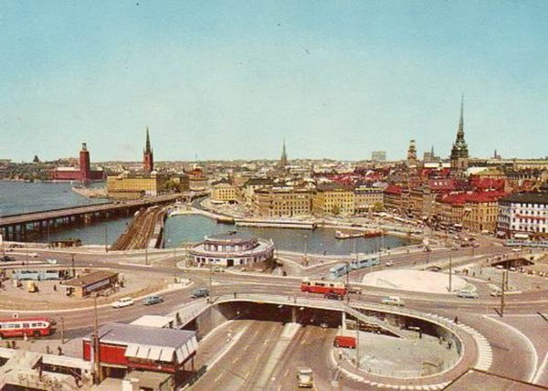
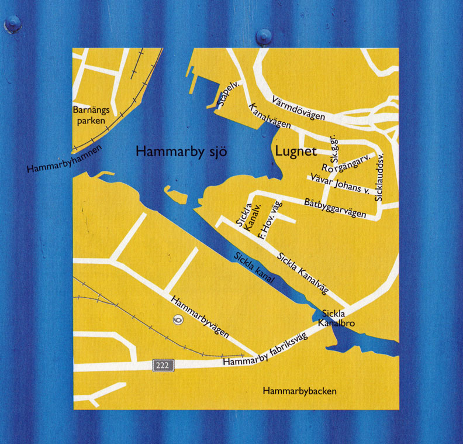
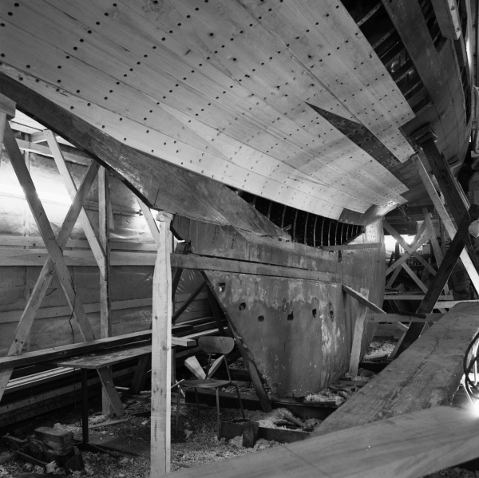
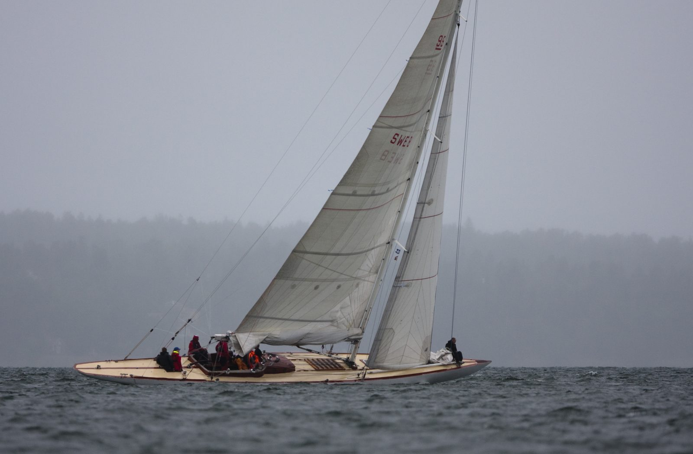

Åland
Uppväxt på Åland
Bilder från barndomshemmet på Sottunga, Första gången Harry fick hjälpa morbror i båtbyggeriet efter skolan , 8-10 år gammal.Väljer själv att bli båtbyggare, alternativen sjöman eller jordbrukare.Rövarhistorier om kor, får, jakt, fiske och spritsmuggling

Stockholm
Flyttar till Stockholm
När/varför Andra jobb innan båtar på heltid.
Henriksdal
Egen verkstad
Första egna verkstaden vid Lugnet.Klippa mellan bilder hur det såg ut då och hur det ser ut nu.Jobbar åt Svenska Sjö/försäkringsjobb.I princip den enda båtrenoveraren i Stockholm.Ingen bil, åker med verktygslåda på bussen tillsammans med snorkiga överklassdamer.

Båtbyggeri med Elis
Nybygge
Elis och Harry bygger sju båtar i en serie, går inte ihop ekonomiskt

KORT RUBRIK
Egen verkstad
Lite längre beskrivande text som visar hur ett stycke ser ut här nere i rutan.
Thomas
Thomas
Börjar jobba med Thomas Larsson 1975

Beatrice Aurore
Beatrice Aurore
Renoveringen av Beatrice Auror 1987-1991
KORT RUBRIK
Renoveringar
Lite längre beskrivande text som visar hur ett stycke ser ut här nere i rutan.
KORT RUBRIK
Lärlingar
De halva rutorna har ingen bild men mer text, med samma formatering som de hela rutorna så hierarkin hålls konsekvent genom hela griden.

KORT RUBRIK
Nutid
Lite längre beskrivande text som visar hur ett stycke ser ut här nere i rutan.
KORT RUBRIK
Självhushåll
De halva rutorna har ingen bild men mer text, med samma formatering som de hela rutorna så hierarkin hålls konsekvent genom hela griden.